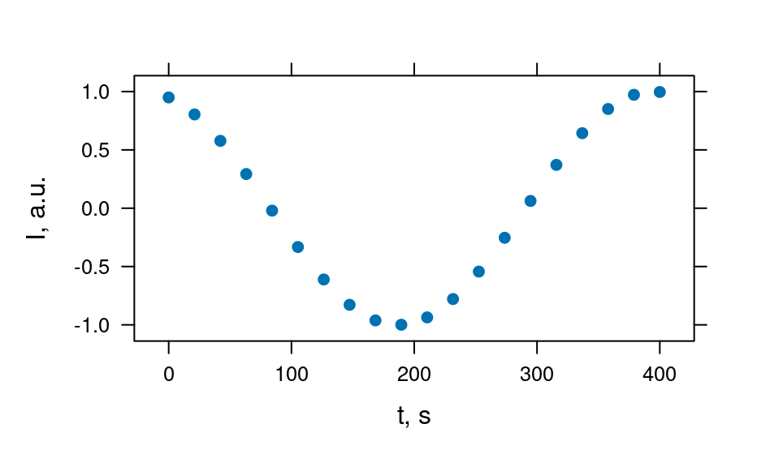
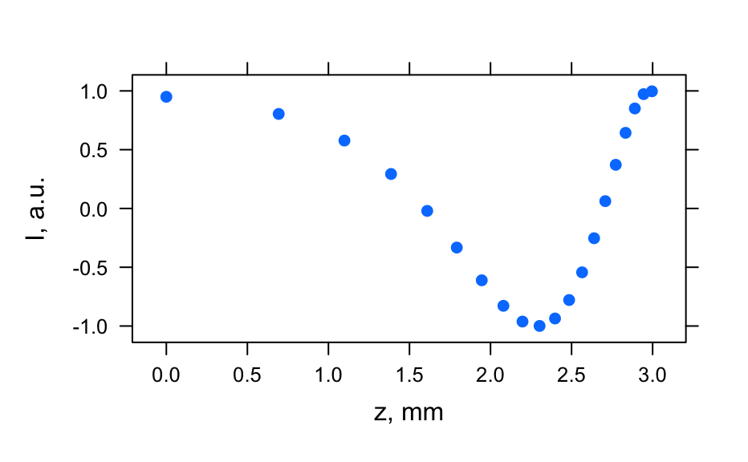
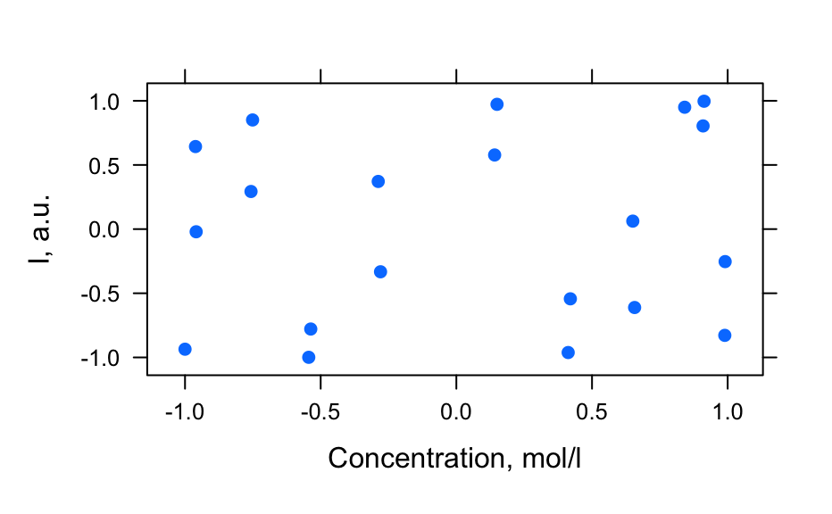
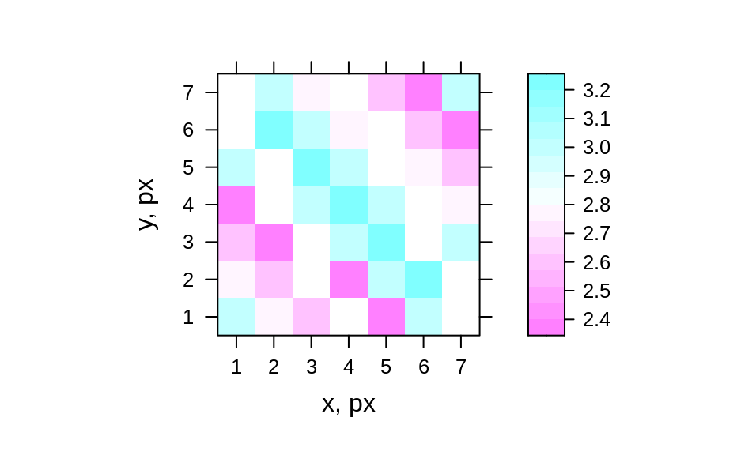
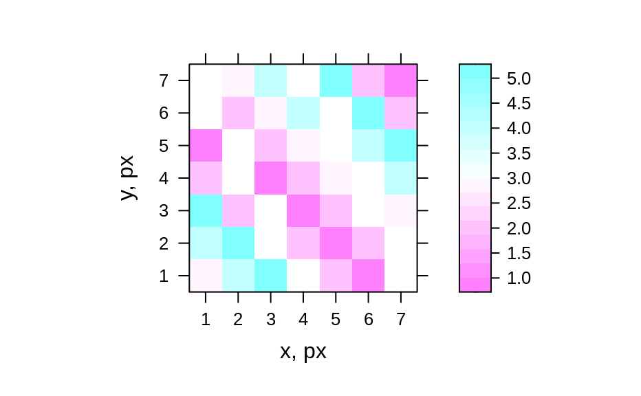

These functions generate hyper-spectral datasets that are mainly used for exploring and testing functionality of hyperSpec.
generate_hy_spectra() generates several spectra.
generate_hy_profile() generates depth, concentration, time-series
profiles at a single wavelength.
generate_hy_map() generates hyper-spectral map.
generate_hy_spectra(n_wl = 50, n = 20)
generate_hy_profile(n = 20, wavelength = 550)
generate_hy_map(n_wl = 5, n_xy = 7, k = 5)(integer) Number of wavelengths (points per spectrum).
(integer) Number of spectra.
(numeric) A single numeric value for wavelength.
(integer)number of pixels in x and y directions of hyper-spectral map.
integer not larger than n_xy. If k = n_xy, there are no empty
pixels in the map. Otherwise, some pixels are empty.
A hyperSpec object.
# Generate spectra
hy_spectra <- generate_hy_spectra()
hy_spectra
#> hyperSpec object
#> 20 spectra
#> 5 data columns
#> 50 data points / spectrum
plot(hy_spectra)
# Generate profiles
hy_profile <- generate_hy_profile()
hy_profile
#> hyperSpec object
#> 20 spectra
#> 4 data columns
#> 1 data points / spectrum
plot_c(hy_profile, model = spc ~ t)

plot_c(hy_profile, model = spc ~ z)

plot_c(hy_profile, model = spc ~ c)

# Generate hyper-spectral map
hy_map <- generate_hy_map()
hy_map
#> hyperSpec object
#> 35 spectra
#> 4 data columns
#> 5 data points / spectrum
plot_map(hy_map)
#> Warning: device support for raster images unknown, ignoring 'raster=TRUE'

plot_map(hy_map[, , 8000])
#> Warning: device support for raster images unknown, ignoring 'raster=TRUE'
